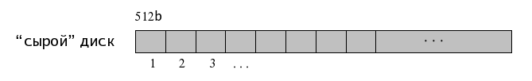

9.4. Диски и разделы
Структура "сырого" диска

Представление сырых дисков в различных системах
QNX:
/dev/hd0, /dev/hd1, /dev/hd2, ...
Linux:
/dev/hda, /dev/hdb, /dev/hdc, ...
FreeBSD:
/dev/ad0, /dev/ad1, /dev/ad2, ...